Antalya'da BMW Periyodik Bakım Rehberi: Ne Zaman, Neler Yapılır?
BMW periyodik bakımı ne zaman yapılmalı, hangi yağ kullanılmalı, Antalya sıcağında nelere dikkat edilmeli? BMW uzmanından eksiksiz bakım rehberi.
Devamını oku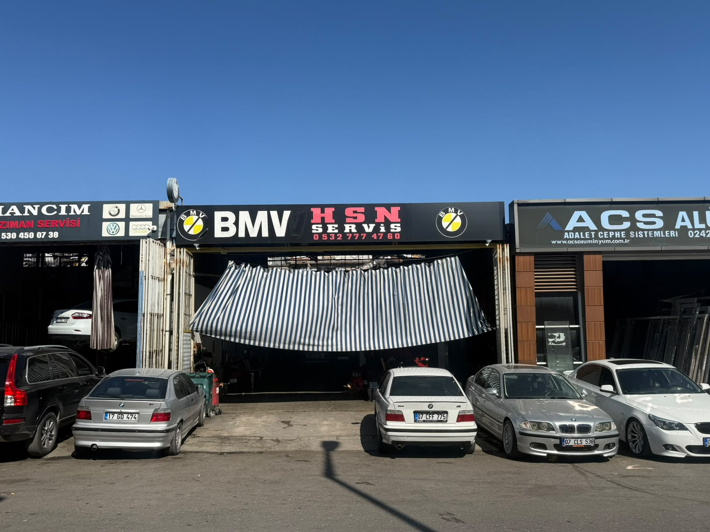
Bakım, motor, şanzıman, DPF, elektrik, klima ve kaporta-boya hizmetleri tek çatı altında. Her işlem faturalı ve fotoğraflı olarak raporlanır.
HSN Otomotiv, Antalya Kepez Akdeniz Sanayi Sitesi'nde BMW marka araçlara bakım, onarım ve teknik destek hizmeti veren bağımsız bir servis işletmesidir. Mekanik, elektrik-elektronik, klima, kaporta-boya ve yedek parça hizmetlerini tek çatı altında sunuyoruz.
Hasan Kaşlı liderliğindeki teknik ekibimiz; BMW'nin motor ve şanzıman yapısına, elektronik sistemlerine ve modellere özgü kronik arızalara hâkimdir. Doğru teşhisi, gereksiz parça değişiminin önüne geçmenin ve müşterimizin bütçesini korumanın ilk adımı olarak görüyoruz.
Tüm işlemler faturalı olarak kayıt altına alınır. Değiştirilen parçalar fotoğraflı olarak raporlanır, parça ve işçilik bedeli işe başlanmadan önce onayınıza sunulur.
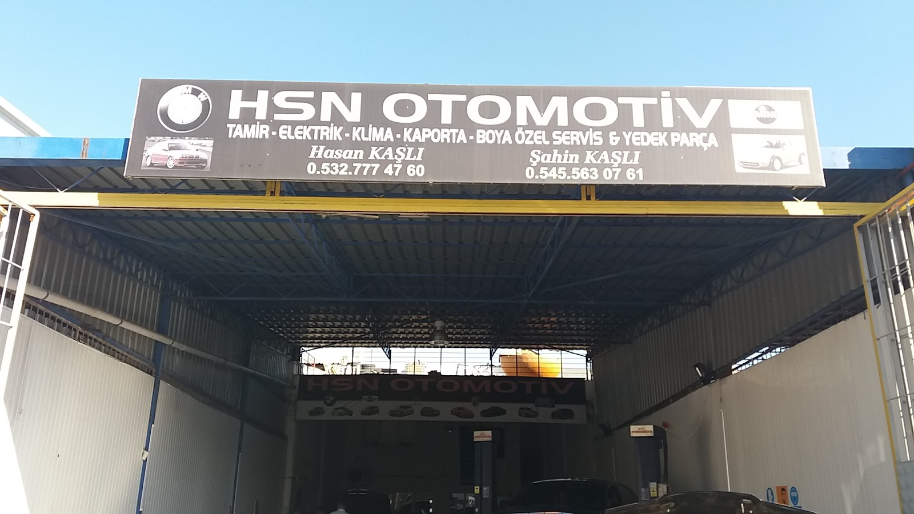
BMW onaylı yağ ve filtreler, fren hidroliği, diyagnostik tarama ve servis göstergesi sıfırlama.
Detay →N47, B47, N57, N20, N52, N54/N55 ve klasik motorlarda ölçümlü, komple revizyon.
Detay →N47 ve N20 motorlarda zincir, gergi ve kızak setinin birlikte değişimi.
Detay →Güç kaybı, duman ve aktüatör arızalarında teşhis, revizyon veya değişim.
Detay →ZF 6HP / 8HP şanzımanlarda yağ, karter-filtre ve mekatronik işlemleri.
Detay →Arıza tespiti, elektrik tesisatı, akü kaydı ve modül kodlama.
Detay →Gaz dolumu, kaçak testi, kompresör ve fan arızaları.
Detay →Hasar onarımı, parça değişimi, boya ve lokal rötuş.
Detay →Orijinal ve OEM yedek parça temini, montajıyla birlikte.
Detay →DPF temizliği, onarımı ve değişimi; tıkanma ve rejenerasyon arızaları.
Detay →Salıncak, amortisör, hava süspansiyonu, disk ve balata.
Detay →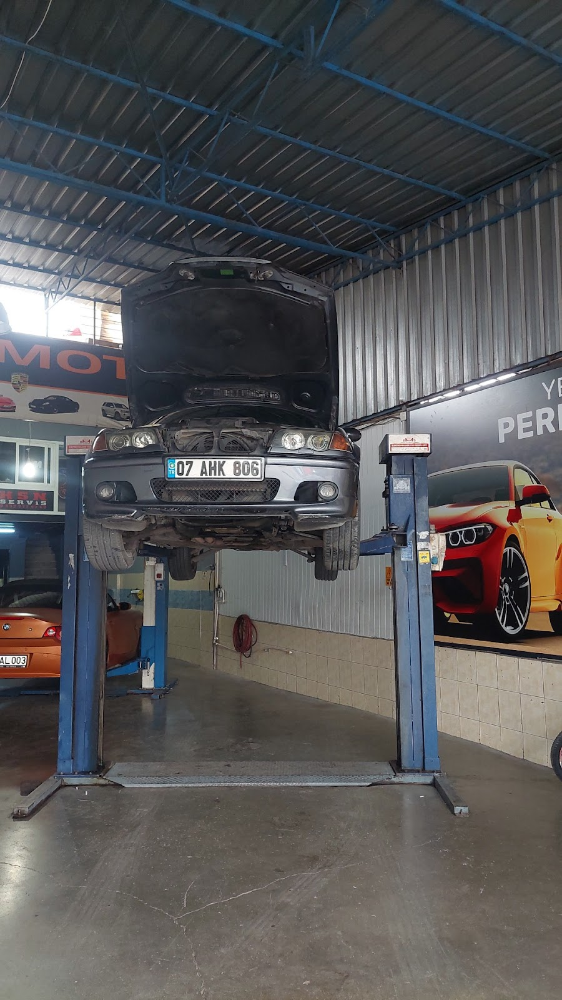

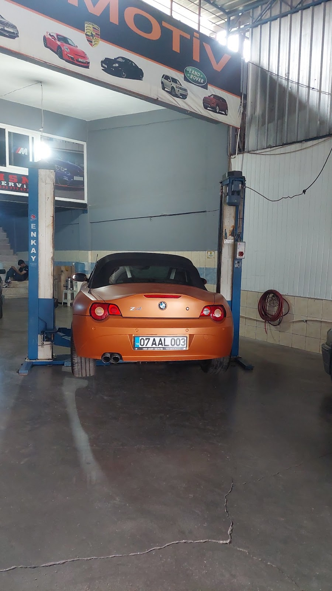

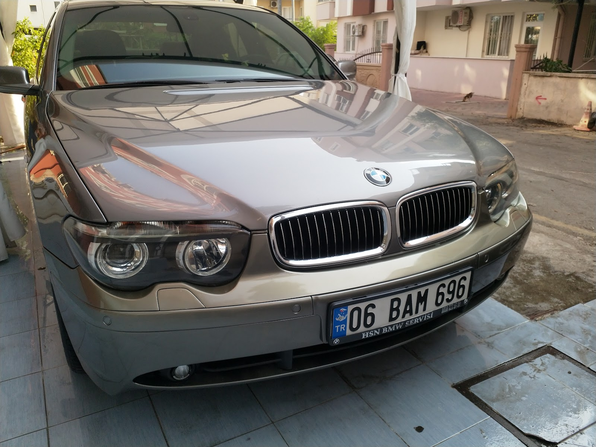
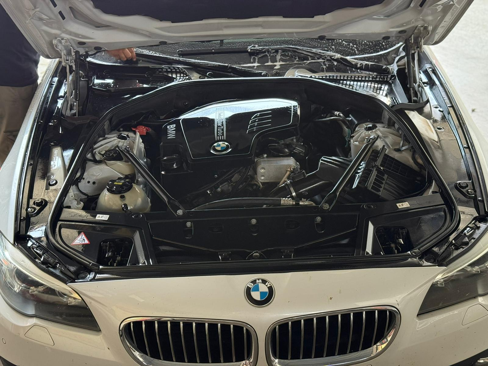
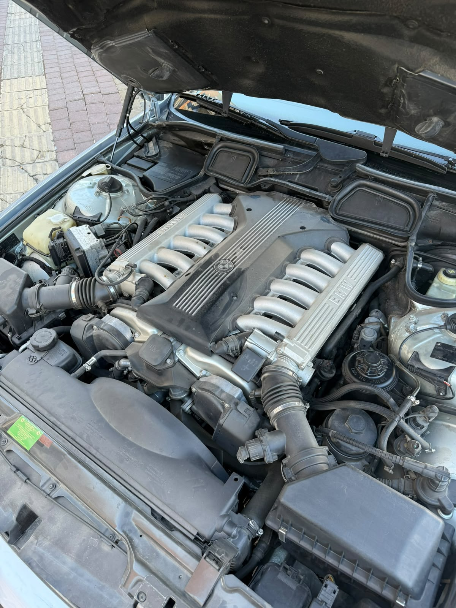
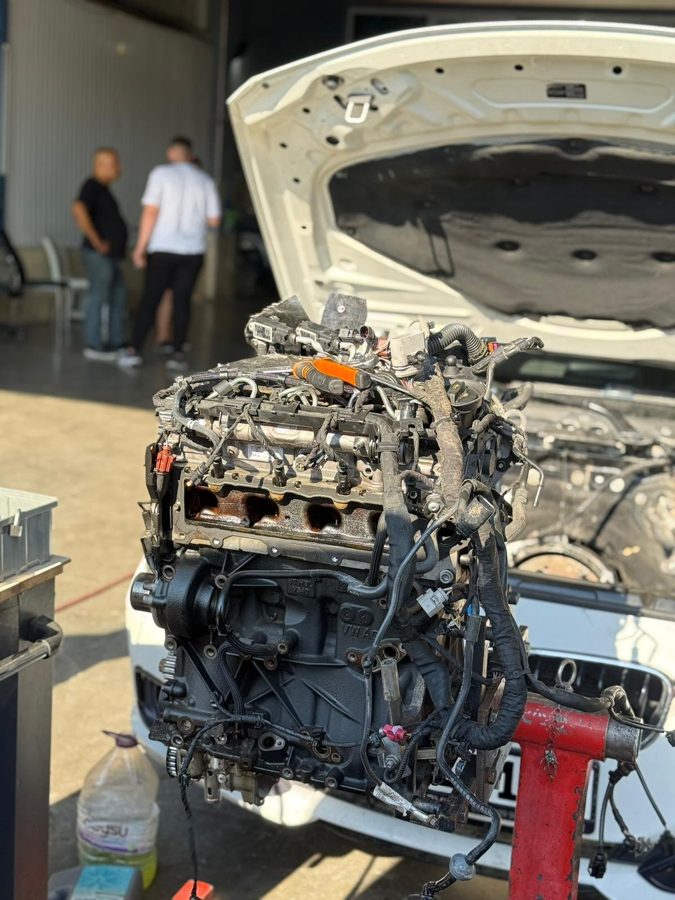
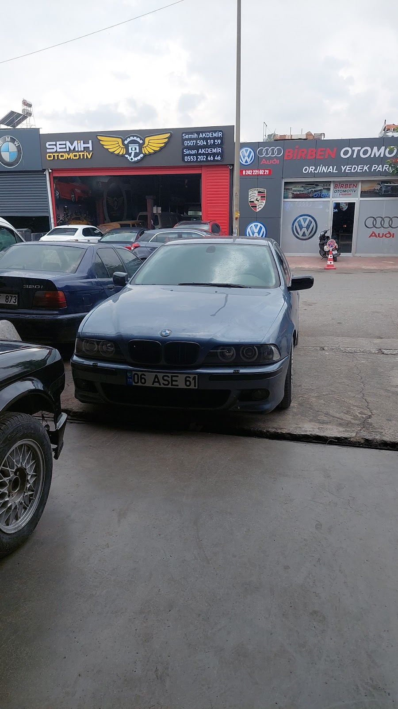
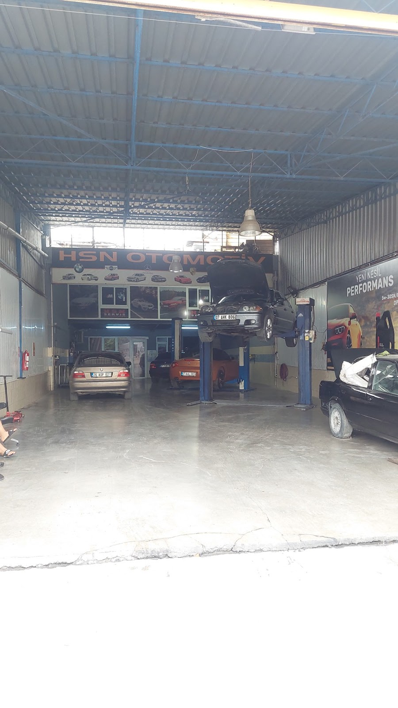
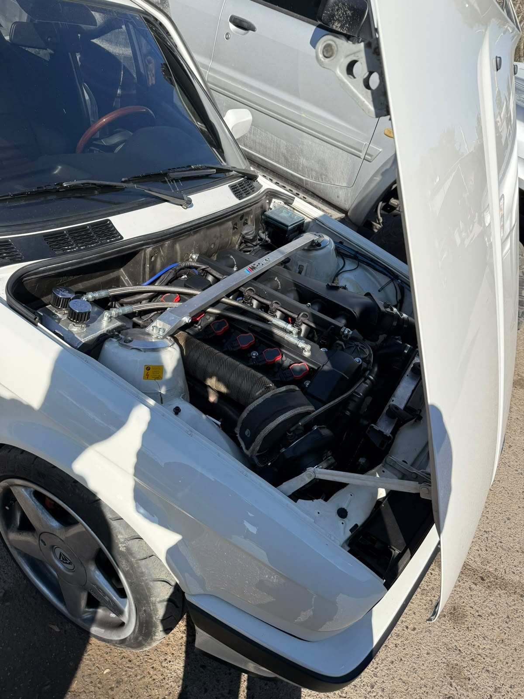
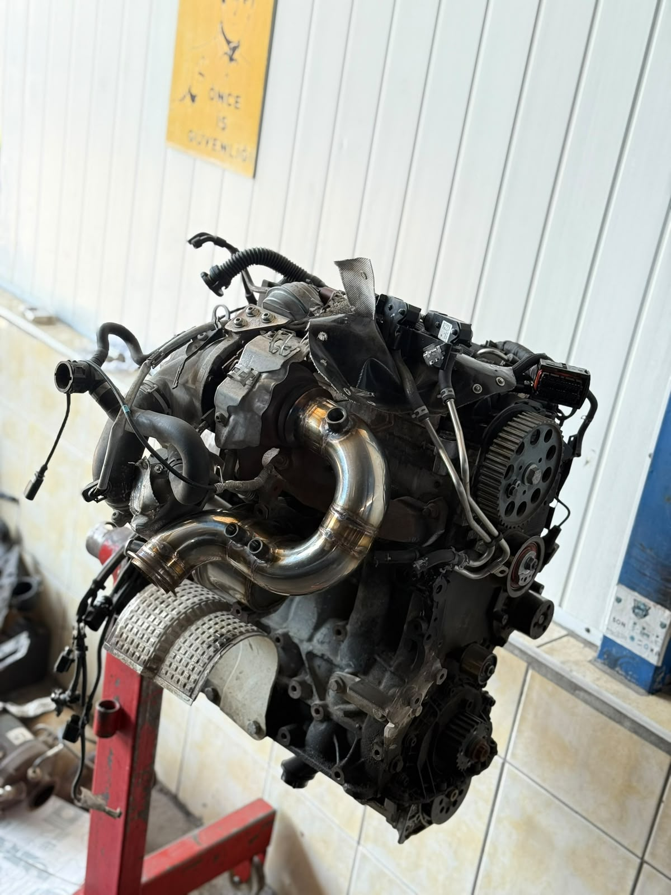
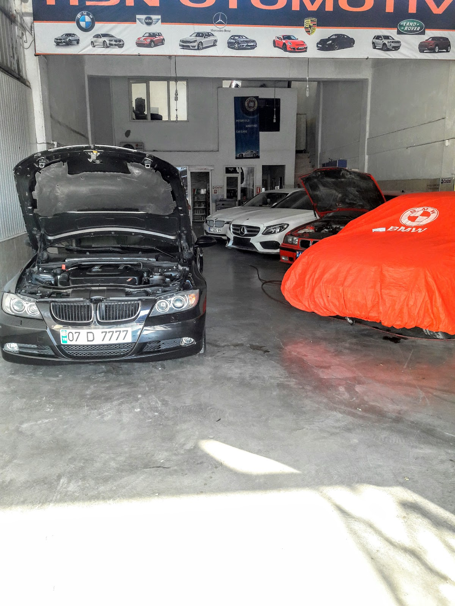
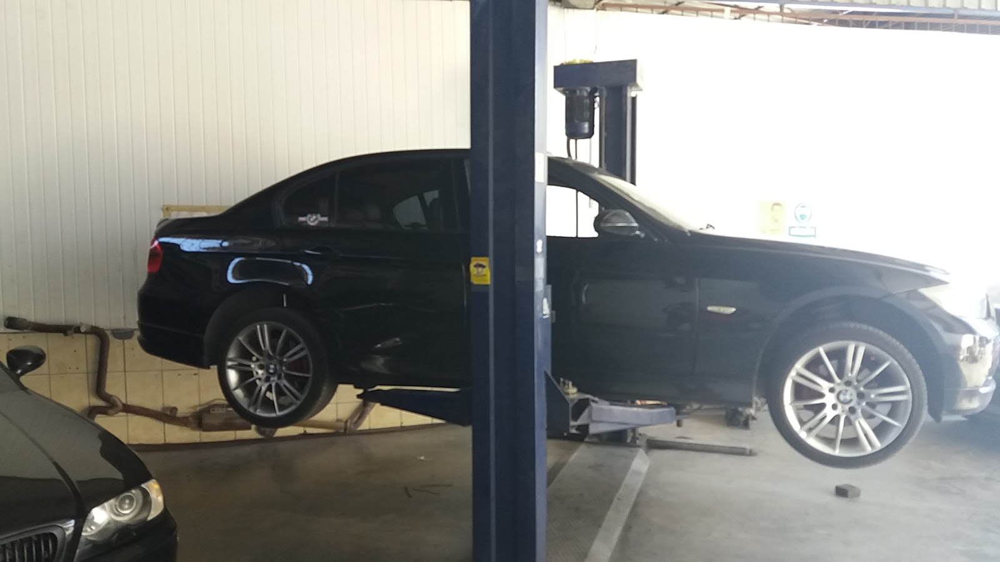


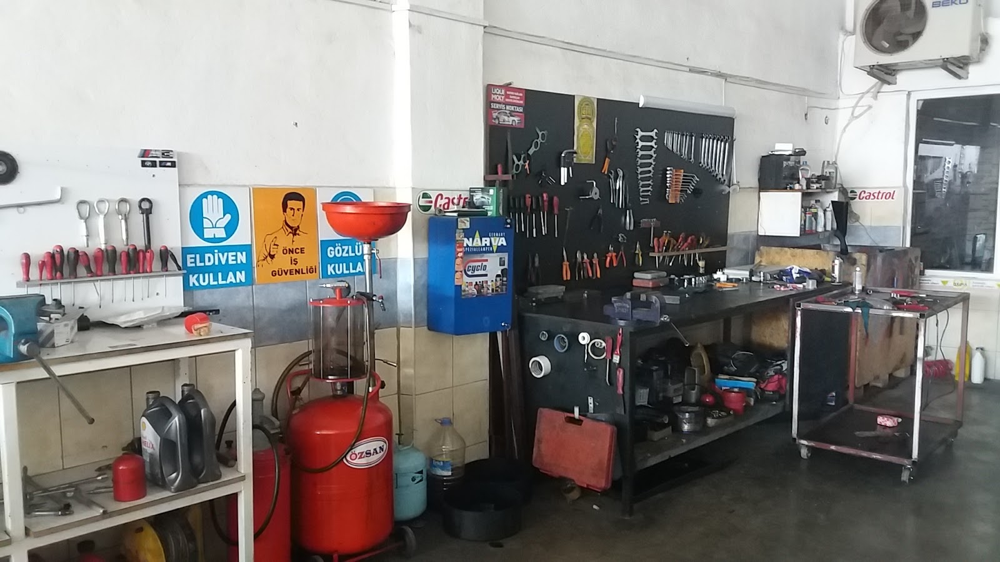
Modele ve motor koduna özgü kronik arızalarda deneyimliyiz. Aşağıda servisimize en sık gelen arızalar yer alıyor.
| Motor | Tip | Belirti | Çözüm |
|---|---|---|---|
| N47 | 2.0 dizel · 2007–2015 | Motorun arka tarafından ıslık / vızıltı sesi | Zincir, gergi ve kızak seti değişimi |
| N20 | 2.0 benzin turbo · 2011–2017 | Soğuk çalıştırmada zincir sesi | Zincir kılavuzu ve set değişimi |
| N52 / N55 | 3.0 benzin | Yanık yağ kokusu, rölanti düzensizliği | Yağ filtre gövdesi contası, VANOS, su pompası |
| B47 / N57 | Dizel · 2014+ | Çekiş kaybı, EGR arıza kaydı | EGR soğutucu ve turbo aktüatörü kontrolü |
| ZF 6HP / 8HP | Otomatik şanzıman | Vuruntu, gecikmeli vites geçişi | Karter, filtre, yağ ve adaptasyon |
Satın almayı düşündüğünüz aracı satıcıyla birlikte getirin. BMW'ye özgü mekanik ve elektronik riskleri inceleyip yazılı rapor sunalım.
Telefon, WhatsApp veya online form ile aracınızı ve şikâyetinizi iletin.
Aracınız BMW'ye özel diyagnostik ekipmanla, sizinle birlikte incelenir.
Parça ve işçilik bedeli netleşir. Onayınız olmadan işleme başlanmaz.
Fatura, fotoğraflı işlem raporu ve servis kaydıyla teslim.
“İlgi, alaka, dürüstlük, müşteri memnuniyeti; Hasan Usta ve ekibi bu işin zirvesi. Bir tanıdık aracılığıyla Zonguldak'tan geldim, E46 aracımın çözülmeyen arızasını 1 saat içinde çözdü.”
“Gördüğüm en iyi servislerden. İlgi seviyesi olsun, çalışma hızları olsun, davranışları olsun, arıza tespit hızları olsun her yönden tavsiye ettiğim nadir garajlardan.”
“Harika işçilik. BMW'niz varsa başka servis aramayın. Diğer servisler gibi cebinizden paranızı koparmaya çalışmayan bir sahibi var.”
“Hasan Kaşlı ve Ayhan Usta'ya çok teşekkür ederim. Böyle ustalar kaldı mı diyor insan. İşinin ehli, güvenilir, dürüstler.”
“Temiz ve tecrübeli bir işyeri, aldıkları parayı hak ediyorlar. Profesyonel bir işçilik isteyenlerin aradığı yer HSN BMW servisi.”
“Samimi ve dürüst olduklarını düşünüyorum. Ayrıca işlerini iyi yapıyorlar. Adamlar BMW, Mercedes ve diğer Alman arabalar konusunda usta.”
“Antalya'da dürüstlükte tek geçerim Hasan Ustaya. İlgi ve alakası için çok teşekkür ederim.”
“Hızlı ve doğru tespit ve müdahale... Hasan Usta bu işi biliyor.”
“Dürüstlük, bilgi, tecrübe. Aracınızla ilgili her türlü sorunu çözerler.”
Sokak Görünümü ile servisimizin önündesiniz. Sürükleyerek çevreye bakabilir, oklarla ilerleyebilirsiniz.
BakımBMW periyodik bakımı ne zaman yapılmalı, hangi yağ kullanılmalı, Antalya sıcağında nelere dikkat edilmeli? BMW uzmanından eksiksiz bakım rehberi.
Devamını okuMotorBMW N47 dizel motorlarda zincir uzaması ve kopma riski. 116d, 118d, 120d, 318d, 320d, 520d, X1, X3 sahipleri için belirtiler ve çözüm rehberi.
Devamını okuTurboBMW'nizde çekiş düştü, mavi ya da siyah duman mı var? BMW turbo arızası belirtileri, nedenleri, tamir mi değişim mi sorusu ve Antalya turbo servisi.
Devamını okuUzmanlık alanımız BMW'dir. 1'den 7 Serisi'ne, X modellerine ve klasik E serilerine kadar tüm BMW modellerine hizmet veriyoruz. Diğer Alman markaları için de bizimle iletişime geçebilirsiniz.
Üretici şartnamesine uygun, onaylı yağ ve parçalarla yapılan bakım tek başına garantiyi geçersiz kılmaz. Tüm işlemlerimiz faturalı ve kayıtlıdır.
0532 777 47 60 numaralı telefondan, WhatsApp üzerinden veya online randevu formu ile randevu oluşturabilirsiniz.
Evet. BMW'ye özel diyagnostik ekipmanla hata kodu okuma, canlı veri analizi, kodlama ve programlama hizmeti veriyoruz.
Evet. Diyagnostik tarama, zincir, turbo, şanzıman, yağ kaçağı ve alt takım kontrollerini içeren alım öncesi incelemenin ardından yazılı rapor sunuyoruz.
Arayın, WhatsApp'tan yazın ya da servisimize uğrayın.